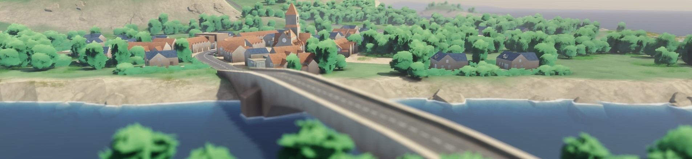
CityBuilder Subjectivant
Un proto soutenant un travail de recherche
Ce prototype exploratoire de city builder a pour objectif d’illustrer ce que peut être un jeu vidéo “subjectivant” (soutenant de manière positive le développement de la subjectivité des joueurs).
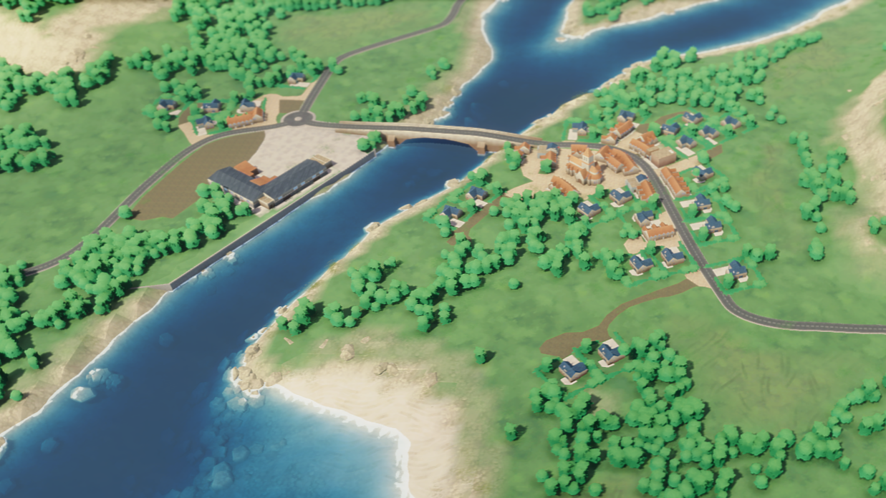
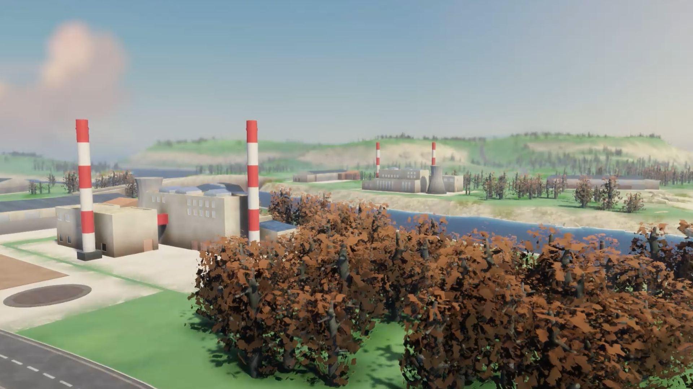
Reposant sur le concept central de “rhétorique procédurale” (développé par le designer Ian Bogost), les visuels, les systèmes de jeu et le game feel globale du jeu ont été pensés pour transmettre une vision questionnant nos normes urbaines et notre rapport à l’environnement.
Espace sensible :
semi-réalisme stylisé
La direction artistique visuelle à été choisie pour son potentiel à placer le joueur dans une posture ambiguë : le semi-réalisme permettant un rattachement symbolique des joueurs à leur réel physique, et la stylisation encourageant un regard réinterprétant.
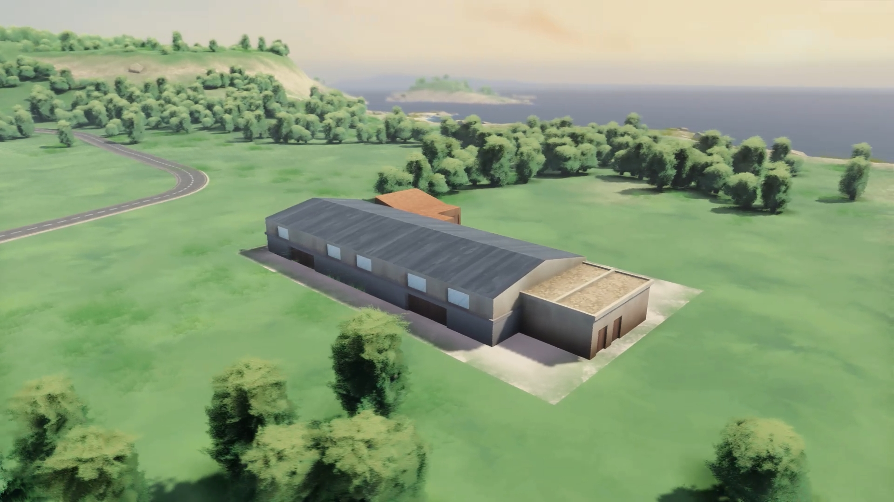

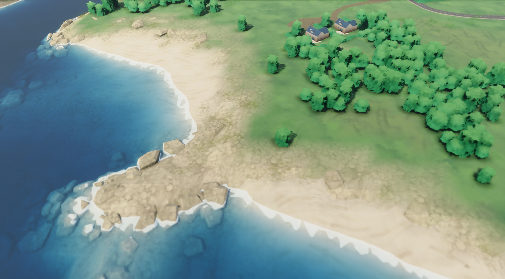
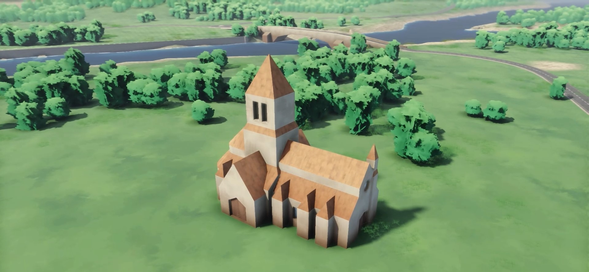
Les assets du jeu ont été réalisés sur Blender. Pensé pour un temps de production très courts, une simplicité importante est assumée, mettant plutôt l’accent sur la composition environnementale et les textures.
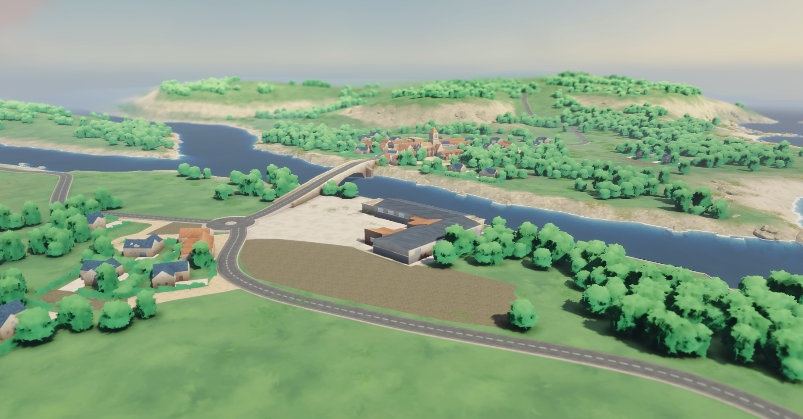
Questionner le choix
de la “god view”
Questionner la subjectivation encouragée par un jeu revient à comprendre les répercussions de chaque décision de design. Ici, la vue plongeante et surtout les modalités de navigation incarnent la présence physique du joueur pour lui donner une posture plus extérieure et potentiellement critique.
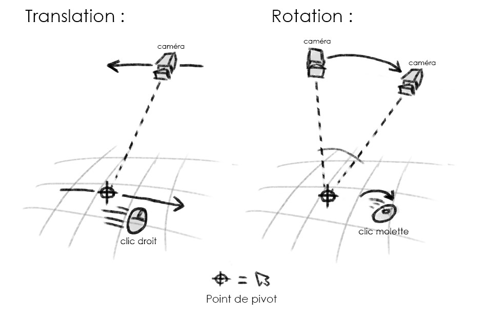
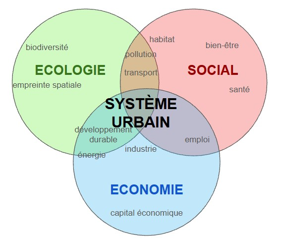
mettre en tension des facteurs clés
J’ai pensé un cadre ludique plaçant en son cœur les tensions pouvant exister entre différents enjeux : la résilience écologique, le bien-être social et la rentabilité économique. J’ai donc pris la décision de me détacher du système classique de coût des actions reposant uniquement sur une dépense financière pour proposer un regard différent sur les enjeux fondamentaux d’une conception urbaine.
Iconographie et feedbacks
Un travail esthétique et d’ergonomie a été effectué pour améliorer l'affordance et mettre l’accent sur son sens exprimé.
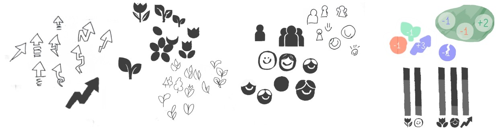
Un urbanisme organique
Malgré le défis technique de ce choix, différentes options de pose des bâtiments et routes ont été explorées. Le prototype réalisé permettait une fois de plus de soutenir des réflexions quant à la rhétorique des différents systèmes interactifs.
Système dynamique de simulation
De nombreux facteurs s’ajoutant aux trois principaux ont été pensés pour produire des réactions en chaîne et porter un discours. La nature cachée (ou presque) de ces facteurs encourage le joueur à adopter une posture active quant à l’impact de ses choix.
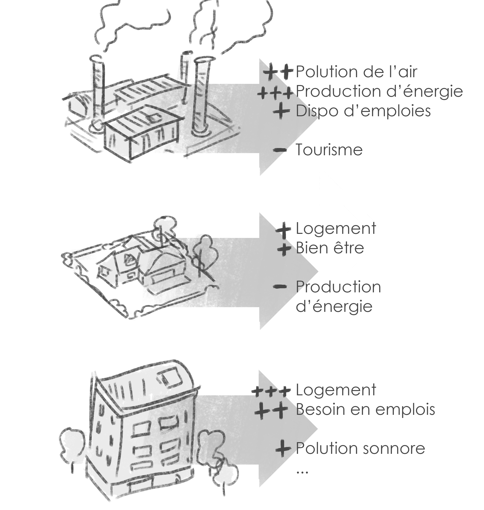
Rendre sensible certaines répercussions
La simple présence de certains facteurs participe à la rhétorique procédurale du jeu et la vision du monde dépeinte par le jeu. La différenciation genrée de l’accès au sport à ainsi cherchée à être mise en lumière, tout comme la problématique de pollution de l’air.
Concernant l’interface, des événements simulés étant diffus dans le temps, le potentiel de des outils d’agentivité temporelle à été questionné et ces derniers ont été réalisés.
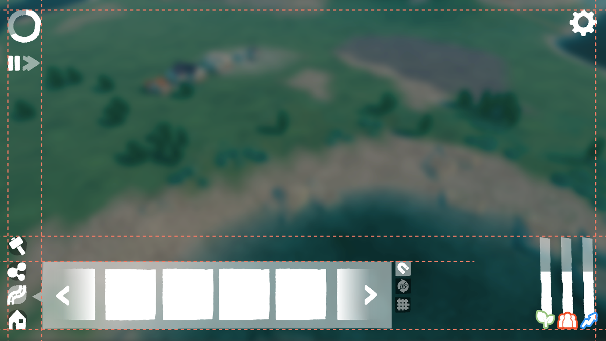
Support d’une réflexion sur la rhétorique procédurale
Bien que très exploratoire et n'aboutissant pas à une expérience de jeu pensée pour être réellement joué, ce prototype à été le support d’une réflexion portée sur le sens pouvant être transmis par les jeux vidéos, d’autant plus dans un contexte comme celui des city builders.
Année • 2024
Durée • 6 mois
Contexte • scolaire (DSAA2)
Groupe • solo
Outils • Unity, Blender, Photoshop